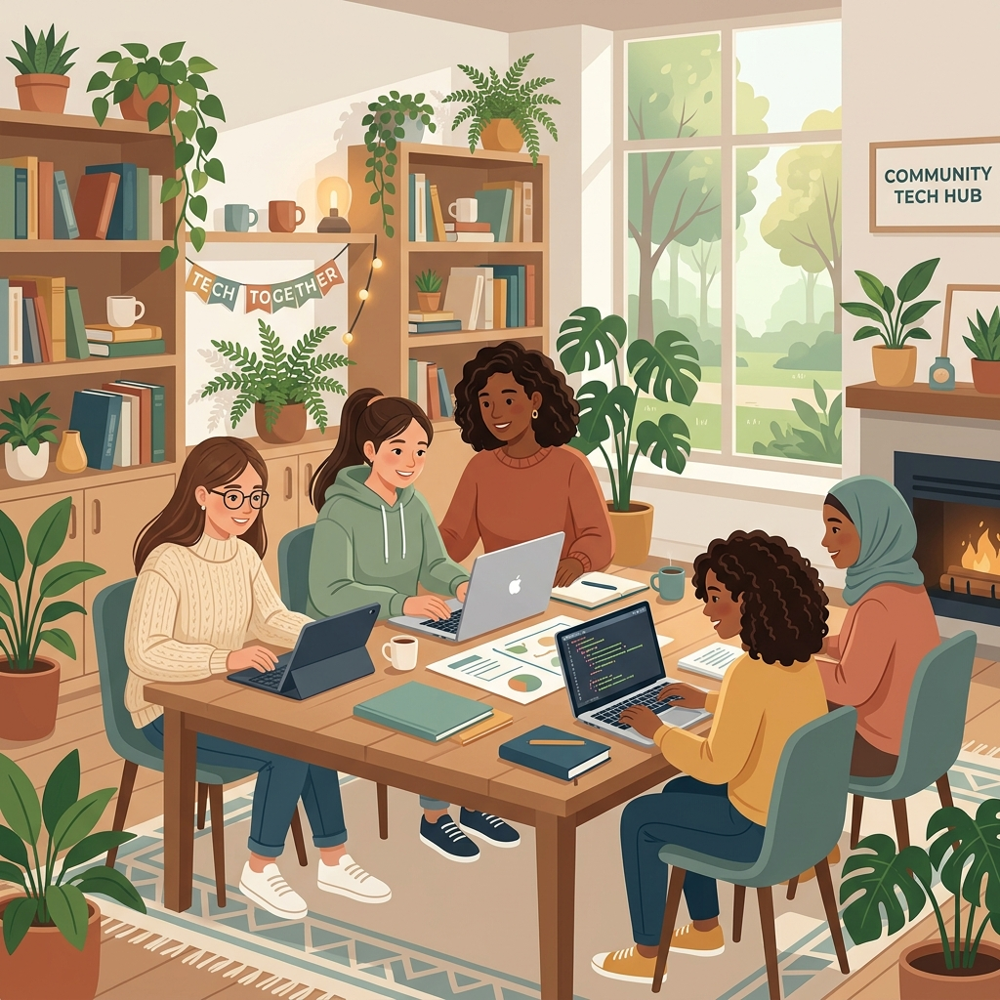

A Safe Space for Growth and Tech
Empowering the Next Generation of Women in Tech
She Can Foundation provides a protective, welcoming environment where girls and young women can explore technology, learn software development, build projects, and find life-changing career mentorship.
